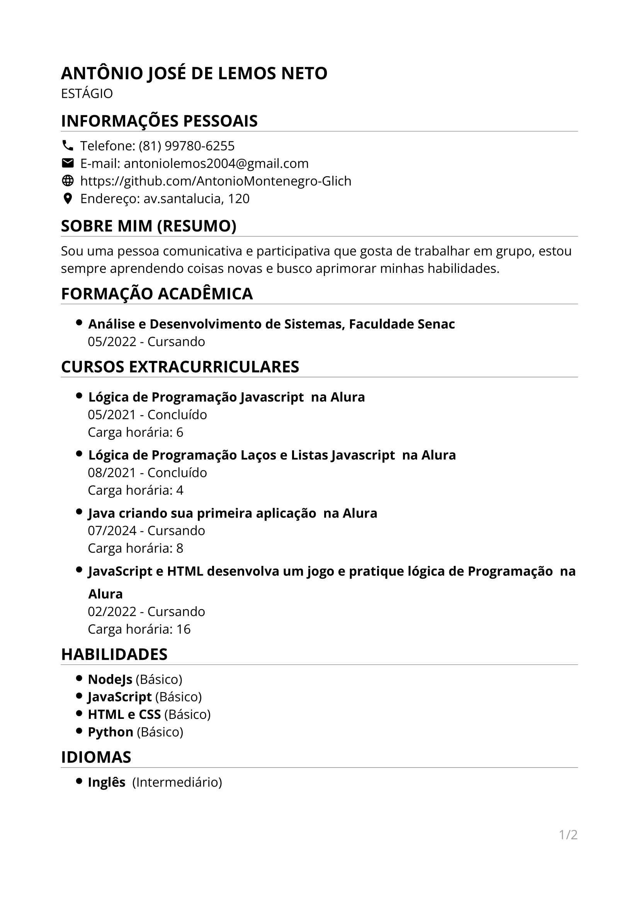

ANTÔNIO JOSÉ DE LEMOS NETO
INTERN
PERSONAL INFORMATION
📞 Telephone: (81) 99780-6255
📧 E-mail: antoniolemos2004@gmail.com
🌐 GitHub:
github.com/AntonioMontenegro-Glich
📷 Instagram:
instagram.com/antonio_jose02
📍 Adress: av. santalucia, 120
ABOUT ME (SUMMARY)
I am a communicative and participative person who likes to work in a group, I am always learning new things and I seek to improve my skills.
Academic Background
- Systems Analysis and Development, Senac College
05/2022 - Studying
EXTRACURRICULAR COURSES
- Javascript Programming Logic - Alura
05/2021 - Done
Workload: 6
- Programming Logic Loops and Javascript Lists - Alura
08/2021 - Done
Workload: 4
- Java creating your first application - Alura
07/2024 - Studying
Workload: 8
- JavaScript and HTML: Develop a Game and Practice Programming Logic - Alura
02/2022 - Studying
Workload: 16
EXTRA-CURRICULAR ACTIVITIES
- English Course - Advanced English
05/2014 - 05/2026
Learning more about the English language to communicate better in the workplace and for personal use.
SKILLS
- NodeJS (Basic)
- JavaScript (Basic)
- HTML e CSS (Basic)
- Python (Basic)
LANGUAGES
Image of the curriculum
